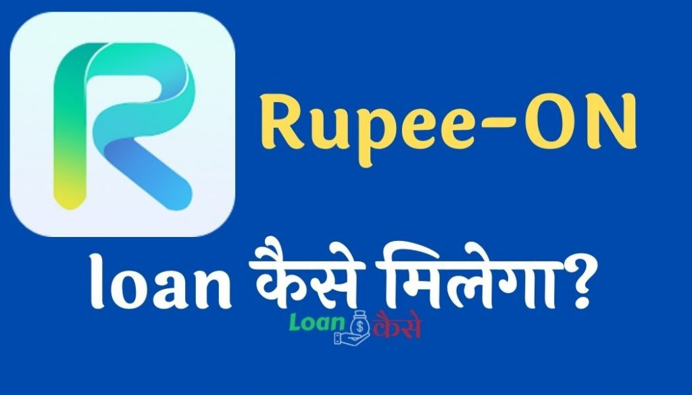

दोस्तों मार्केट में आज के समय में वैसे तो बहुत सारे पर्सनल लोन देने वाले एप्लीकेशन है लेकिन आज मैं आपको जिस एप्लीकेशन के बारे में बताने जा रहा हूं वो बिल्कुल नई है,और काफी आसानी से इस एप्लीकेशन की मदद से कम से कम ब्याज दर पर काफी सारे लोग आजकल पर्सनल लोन ले रहे हैं।
जिसका नाम है Rupee On- Personal Loan application in your phone,तो आइए जानते हैं इस एप्लीकेशन की क्या खासियत है इस एप्लीकेशन से आपको लोन लेना चाहिए या नहीं लेना चाहिए ,यह सभी जानकारी आपको इस पोस्ट में मिलने वाले हैं तो प्लीज़ लास्ट तक पढ़िएगा।
{kind=link}

Rupee On- Personal Loans in your phone application क्या है ?
इस एप्लीकेशन की मदद से आप घर बैठे ऑनलाइन अपने मोबाइल से पर्सनल लोन ले सकते हैं आपको कहीं भी किसी भी बैंक या ऑफिस में जाने की जरूरत नहीं है सारा प्रोसेस ऑनलाइन हो जाएगा और कुछ ही समय में जितने भी लोन अमाउंट आपके पास होंगे वह सारे के सारे पैसे आपके खाते में क्रेडिट कर दिए जाएंगे।
Rupee On- Personal Loan application एक एंड्राइड एप्लीकेशन है जिसे आप प्ले स्टोर पर डाउनलोड कर सकते हैं यह एप्लीकेशन लोगों को पर्सनल लोन देने के लिए बनाया गया है इस एप्लीकेशन का काम सिर्फ लोगों को पर्सनल लोन प्रोवाइड करवाना है,करवाने से मेरा मतलब यह है की ये applicaton खुद लोन नहीं देती है बल्कि आपको बेस्ट लोन प्रवाइडर से contact करवाती है।और आपको लोन लेने में मदद करती है।
दोस्तों इस एप्लीकेशन के रेटिंग और डाउनलोड की बात करें तो प्ले स्टोर में अभी तक इसके एक लाख से ज्यादा डाउनलोड हो चुके हैं ,और इसके 2.3 की रेटिंग है रेटिंग उतनी अच्छी नहीं है लेकिन फिर भी है बढ़िया एप्लीकेशन है क्योंकि यह अभी नई है इसीलिए इसके रेटिंग अच्छे नहीं हैं। आने वाले समय में यह एक अच्छा खासा पर्सनल लोन देने वाला एप्लीकेशन होने वाला है।
Rupee On application से लोन क्यों लेना चाहिए-इसके क्या फ़ायदे हैं ?
इस एप्लीकेशन के फायदे की बात करें तो कोई विशेष फायदा इसमें नहीं है यह एप्लीकेशन भी दूसरी और एप्लीकेशन की तरह लोन देता है और उसके बदले कुछ इंटरेस्ट लेकर आपको लोन चुकाना पड़ता है अगर आपको कोई और एप्लीकेशन से लोन नहीं मिल रहा है तो आप इस एप्लीकेशन का यूज करके पर्सनल लोन ले सकते हैं।
वैसे इस एप्लीकेशन के द्वारा दी गई जानकारी के अनुसार इनके फायदे इस प्रकार हैं:-
- इस एप्लीकेशन से कम ब्याज दर पर लोन मिलता है।
- लोन रीपेमेंट करने का कोई समय नहीं होता है कभी भी आप लोन रि पेमेंट कर सकते हैं।
- पूरी तरह से लोन का प्रोसेस ऑनलाइन होता है।
- 1 दिन के अंदर है लोन का एप्लीकेशन प्रोसेस हो जाता है और लोनी ब्लॉक हो जाने पर उसी दिन खाते में पैसा भेज दिया जाता है।
- इस एप्लीकेशन से लोन लेने पर किसी तरह का एप्लीकेशन भी नहीं देना पड़ता है।
Eligibility criteria क्या क्या है Rupee On-Personal loan लेने के लिए ?
- आवेदक भारत का नागरिक होना चाहिए।
- आवेदक का उम्र 21-45 years होना चाहिए।
- आवेदक के पास monthly income होना चाहिए चाहे वह किसी भी तरह का हो सरकारी या गैर सरकारी सभी चलेगा।
- आवेदक के पास एक चालू bank accounts होना चाहिए।
- उसके बाद एक मोबाइल नंबर की आवश्यकता पड़ती है।
Rupee On लोन लेने के लिए Documents क्या क्या लगते हैं ?
- पहचान के लिए आधार कार्ड, वोटर आईडी कार्ड, ड्राइविंग लाइसेंस कोई भी चलेगा आधार कार्ड अगर हो तो बढ़िया है।
- पैन कार्ड अनिवार्य है।
- बैंक खाते का आशिक का पहला पन्ना या कैंसिल चेक वैसे कोई भी एक होना चाहिए।
Rate of Interest क्या लगेगा Rupee On से लोन लेने पर ?
Annual Interest Rate (APR): 18% ~ 28% लगता है, लोन एप्लीकेशन करने के समय आपको दिख जाएगा कि आपको कितना ब्याज दर लगने वाला है।
Rupee On application से कितना लोन ले सकते हैं ?
इसमें आप ₹3000 से लेकर ₹200000 तक का लोन आसानी से ले सकते हैं।
Rupee On personal लोन के लिए online apply कैसे करें ?
- सबसे पहले आपको प्ले स्टोर में जाकर Rupee On- Personal Loans In Your Phone एप्लीकेशन को डाउनलोड करें इंस्टॉल कर लेना है और उसे ओपन कर लेना है।
- ओपन करने के बाद आपको सबसे पहले मोबाइल नंबर मांगेगा यह अपना मोबाइल नंबर डाल देना है।
- उसके बाद कुछ परमिशन लाओ करके आगे letsgo पर क्लिक कर देना है।
- यहां पर एप्लीकेशन ओपन होते हैं आपको ढेर सारे लोन देने वाली कंपनी के नाम आ जाएंगे उस में से किसी एक पर आपको क्लिक कर देना है।
- अप्लाई पर जैसे क्लिक करेंगे आपको मेक्रम लोन अमाउंट दिखा दिया जाएगा उसके नीचे एलिजिबिलिटी क्राइटेरिया ,डिसबर्समेंट टाइम, लॉन्ग टर्म सभी आपको दिखा दिया जाएगा उसके नीचे सबसे लेट्स गेट मनी पर आपको क्लिक कर देना है जैसे ही क्लिक करेंगे आप एक नए वेबसाइट पर पहुंच जाएंगे यहां आपको एक नए एप्लीकेशन को इंस्टॉल करना है।
- उसके बाद उस एप्लीकेशन से आपको लोन ले लेना जो एप्लीकेशन आप इंस्टॉल करेंगे उसमें सभी फॉर्मफिलिंग करने के बाद अपने डॉक्यूमेंट अपलोड कर देने हैं।
- 1 दिन के अंदर है आपके लोन एप्लीकेशन को रिव्यू किया जाएगा और सारा कुछ सही रहा तो आपको लोन प्रोवाइड कर दिया जाएगा
Rupee On Official address क्या है ?
Address: Plot No 11/a, G.b. Shopping Complex, Sec-23, Janata Market, Turbhe, Navi Mumbai
State Full: Maharashtra